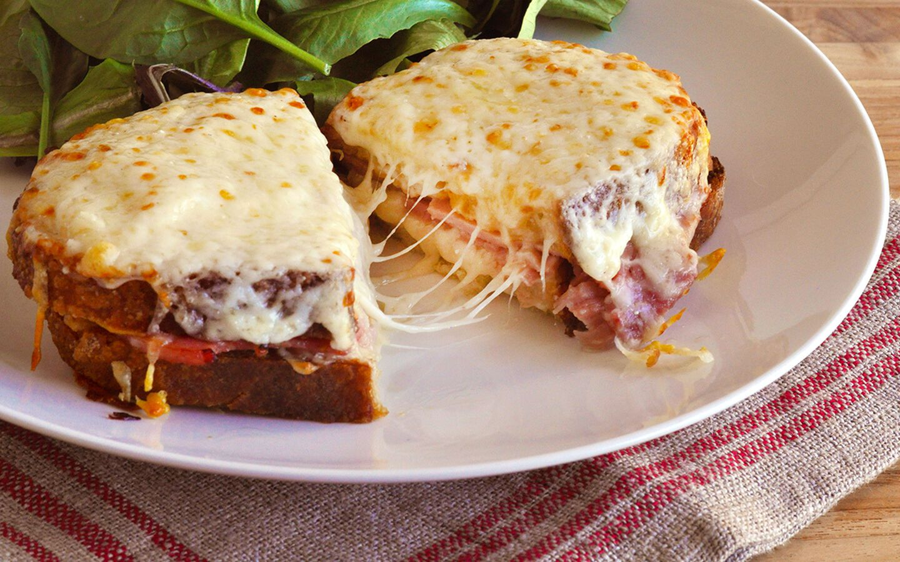

Croque Monsieur

Un sandwich classique français composé de jambon et de fromage grillés entre deux tranches de pain
Le croque monsieur est un sandwich emblématique de la cuisine française. Il est préparé en plaçant des tranches de jambon et de fromage (souvent du fromage suisse ou de l'emmental) entre deux tranches de pain. Le sandwich est ensuite grillé jusqu'à ce que le pain devienne croustillant et que le fromage fonde, créant une combinaison de textures délicieusement fondante et croustillante. Parfois, il est garni de béchamel (sauce blanche) et de fromage supplémentaire, puis passé au four pour gratiner la surface. Le croque monsieur est une option de déjeuner ou de collation réconfortante et savoureuse, appréciée en France et dans de nombreuses régions du monde.
Ingrédients
- Tranches de pain
- Fromage (Gruyère ou Emmental)
- Jambon
- Beurre
- Béchamel (facultatif)
- Sel et poivre
Étapes de préparation
- Beurrez légèrement une tranche de pain.
- Placez une tranche de jambon et une tranche de fromage entre deux tranches de pain pour former un sandwich.
- Faites chauffer une poêle à feu moyen.
- Faites griller le sandwich des deux côtés jusqu'à ce qu'il soit doré et que le fromage fonde.
- Si vous le souhaitez, nappez le dessus du sandwich de béchamel et faites gratiner au four jusqu'à ce qu'il soit légèrement doré.
Retour à la page principale